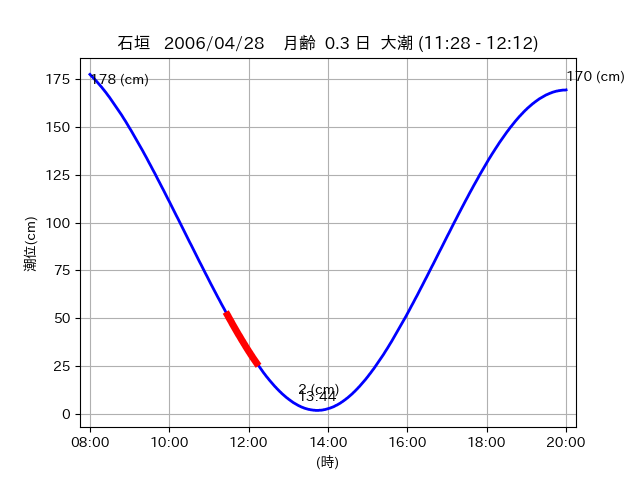

<!DOCTYPE html>
<html>
<head>
    
    <meta http-equiv="content-type" content="text/html; charset=UTF-8" />
    
        <script>
            L_NO_TOUCH = false;
            L_DISABLE_3D = false;
        </script>
    
    <style>html, body {width: 100%;height: 100%;margin: 0;padding: 0;}</style>
    <style>#map {position:absolute;top:0;bottom:0;right:0;left:0;}</style>
    <script src="https://cdn.jsdelivr.net/npm/leaflet@1.9.3/dist/leaflet.js"></script>
    <script src="https://code.jquery.com/jquery-3.7.1.min.js"></script>
    <script src="https://cdn.jsdelivr.net/npm/bootstrap@5.2.2/dist/js/bootstrap.bundle.min.js"></script>
    <script src="https://cdnjs.cloudflare.com/ajax/libs/Leaflet.awesome-markers/2.0.2/leaflet.awesome-markers.js"></script>
    <link rel="stylesheet" href="https://cdn.jsdelivr.net/npm/leaflet@1.9.3/dist/leaflet.css"/>
    <link rel="stylesheet" href="https://cdn.jsdelivr.net/npm/bootstrap@5.2.2/dist/css/bootstrap.min.css"/>
    <link rel="stylesheet" href="https://netdna.bootstrapcdn.com/bootstrap/3.0.0/css/bootstrap-glyphicons.css"/>
    <link rel="stylesheet" href="https://cdn.jsdelivr.net/npm/@fortawesome/fontawesome-free@6.2.0/css/all.min.css"/>
    <link rel="stylesheet" href="https://cdnjs.cloudflare.com/ajax/libs/Leaflet.awesome-markers/2.0.2/leaflet.awesome-markers.css"/>
    <link rel="stylesheet" href="https://cdn.jsdelivr.net/gh/python-visualization/folium/folium/templates/leaflet.awesome.rotate.min.css"/>
    
            <meta name="viewport" content="width=device-width,
                initial-scale=1.0, maximum-scale=1.0, user-scalable=no" />
            <style>
                #map_c9568f90caddea7caec9f4c6d3ad21c7 {
                    position: relative;
                    width: 2048.0px;
                    height: 1600.0px;
                    left: 0.0%;
                    top: 0.0%;
                }
                .leaflet-container { font-size: 1rem; }
            </style>
        
</head>
<body>
    
    
            <div class="folium-map" id="map_c9568f90caddea7caec9f4c6d3ad21c7" ></div>
        
</body>
<script>
    
    
            var map_c9568f90caddea7caec9f4c6d3ad21c7 = L.map(
                "map_c9568f90caddea7caec9f4c6d3ad21c7",
                {
                    center: [24.21, 124.012],
                    crs: L.CRS.EPSG3857,
                    ...{
  "zoom": 12,
  "zoomControl": true,
  "preferCanvas": false,
}

                }
            );

            

        
    
            var tile_layer_37f662c4091186e0b9e776b31b1675ae = L.tileLayer(
                "https://cyberjapandata.gsi.go.jp/xyz/seamlessphoto/{z}/{x}/{y}.jpg",
                {
  "minZoom": 0,
  "maxZoom": 18,
  "maxNativeZoom": 18,
  "noWrap": false,
  "attribution": "\u5730\u7406\u9662\u5730\u56f3",
  "subdomains": "abc",
  "detectRetina": false,
  "tms": false,
  "opacity": 1,
}

            );
        
    
            tile_layer_37f662c4091186e0b9e776b31b1675ae.addTo(map_c9568f90caddea7caec9f4c6d3ad21c7);
        
    
            var marker_f52635c2964d19a974614199ec42ef37 = L.marker(
                [24.213, 124.0037],
                {
}
            ).addTo(map_c9568f90caddea7caec9f4c6d3ad21c7);
        
    
            var icon_856b41ef2e318088da1b139983c4fe25 = L.AwesomeMarkers.icon(
                {
  "markerColor": "orange",
  "iconColor": "white",
  "icon": "info-sign",
  "prefix": "glyphicon",
  "extraClasses": "fa-rotate-0",
}
            );
        
    
        var popup_b53564752e7b83adee020e400557831a = L.popup({
  "maxWidth": "100%",
});

        
            
                var html_5ea7ccacaf97351e96df01b6a9838ca9 = $(`<div id="html_5ea7ccacaf97351e96df01b6a9838ca9" style="width: 100.0%; height: 100.0%;"><table><tr><td></td></tr><tr><td><center>20060428 No.1 </center></table></td></tr></table</div>`)[0];
                popup_b53564752e7b83adee020e400557831a.setContent(html_5ea7ccacaf97351e96df01b6a9838ca9);
            
        

        marker_f52635c2964d19a974614199ec42ef37.bindPopup(popup_b53564752e7b83adee020e400557831a)
        ;

        
    
    
                marker_f52635c2964d19a974614199ec42ef37.setIcon(icon_856b41ef2e318088da1b139983c4fe25);
            
    
            var poly_line_c8d79c9ef70fab76919fceeda82e4888 = L.polyline(
                [[24.213, 124.0037], [24.2107, 124.0045]],
                {"bubblingMouseEvents": true, "color": "#00FFFF", "dashArray": null, "dashOffset": null, "fill": false, "fillColor": "#00FFFF", "fillOpacity": 0.2, "fillRule": "evenodd", "lineCap": "round", "lineJoin": "round", "noClip": false, "opacity": 1.0, "smoothFactor": 1.0, "stroke": true, "weight": 3}
            ).addTo(map_c9568f90caddea7caec9f4c6d3ad21c7);
        
    
            var marker_ae268a041a073f89b376ab3c33e171d8 = L.marker(
                [24.2098, 124.0131],
                {
}
            ).addTo(map_c9568f90caddea7caec9f4c6d3ad21c7);
        
    
            var icon_8a5443debe927e1d54f0bc7ede8a4a02 = L.AwesomeMarkers.icon(
                {
  "markerColor": "orange",
  "iconColor": "white",
  "icon": "info-sign",
  "prefix": "glyphicon",
  "extraClasses": "fa-rotate-0",
}
            );
        
    
        var popup_50f4e1efede8c8084c837f5effdd179b = L.popup({
  "maxWidth": "100%",
});

        
            
                var html_66c2d558aca3b56eeecfbcee9476da35 = $(`<div id="html_66c2d558aca3b56eeecfbcee9476da35" style="width: 100.0%; height: 100.0%;"><table><tr><td></td></tr><tr><td><center>20060428 No.2 </center></table></td></tr></table</div>`)[0];
                popup_50f4e1efede8c8084c837f5effdd179b.setContent(html_66c2d558aca3b56eeecfbcee9476da35);
            
        

        marker_ae268a041a073f89b376ab3c33e171d8.bindPopup(popup_50f4e1efede8c8084c837f5effdd179b)
        ;

        
    
    
                marker_ae268a041a073f89b376ab3c33e171d8.setIcon(icon_8a5443debe927e1d54f0bc7ede8a4a02);
            
    
            var poly_line_f1a09bf13fbdfe23f5f89f8d9ae0a963 = L.polyline(
                [[24.2098, 124.0131], [24.2116, 124.0145]],
                {"bubblingMouseEvents": true, "color": "#FF00FF", "dashArray": null, "dashOffset": null, "fill": false, "fillColor": "#FF00FF", "fillOpacity": 0.2, "fillRule": "evenodd", "lineCap": "round", "lineJoin": "round", "noClip": false, "opacity": 1.0, "smoothFactor": 1.0, "stroke": true, "weight": 3}
            ).addTo(map_c9568f90caddea7caec9f4c6d3ad21c7);
        
    
            var marker_f339d7245fd85217fd132e64f148c298 = L.marker(
                [24.2101, 124.0086],
                {
}
            ).addTo(map_c9568f90caddea7caec9f4c6d3ad21c7);
        
    
            var icon_0c33fbe1882dbdf6a1837e79578366af = L.AwesomeMarkers.icon(
                {
  "markerColor": "orange",
  "iconColor": "white",
  "icon": "info-sign",
  "prefix": "glyphicon",
  "extraClasses": "fa-rotate-0",
}
            );
        
    
        var popup_0389e9d756551a88504b700789ef6283 = L.popup({
  "maxWidth": "100%",
});

        
            
                var html_e2de6358f9ebe022fcc8e891403d8f21 = $(`<div id="html_e2de6358f9ebe022fcc8e891403d8f21" style="width: 100.0%; height: 100.0%;"><table><tr><td></td></tr><tr><td><center>20060428 No.3 </center></table></td></tr></table</div>`)[0];
                popup_0389e9d756551a88504b700789ef6283.setContent(html_e2de6358f9ebe022fcc8e891403d8f21);
            
        

        marker_f339d7245fd85217fd132e64f148c298.bindPopup(popup_0389e9d756551a88504b700789ef6283)
        ;

        
    
    
                marker_f339d7245fd85217fd132e64f148c298.setIcon(icon_0c33fbe1882dbdf6a1837e79578366af);
            
    
            var poly_line_3a07e3fd5194667ed4496c64b177dd77 = L.polyline(
                [[24.2101, 124.0086], [24.2108, 124.0153]],
                {"bubblingMouseEvents": true, "color": "#FF00FF", "dashArray": null, "dashOffset": null, "fill": false, "fillColor": "#FF00FF", "fillOpacity": 0.2, "fillRule": "evenodd", "lineCap": "round", "lineJoin": "round", "noClip": false, "opacity": 1.0, "smoothFactor": 1.0, "stroke": true, "weight": 3}
            ).addTo(map_c9568f90caddea7caec9f4c6d3ad21c7);
        
</script>
</html>